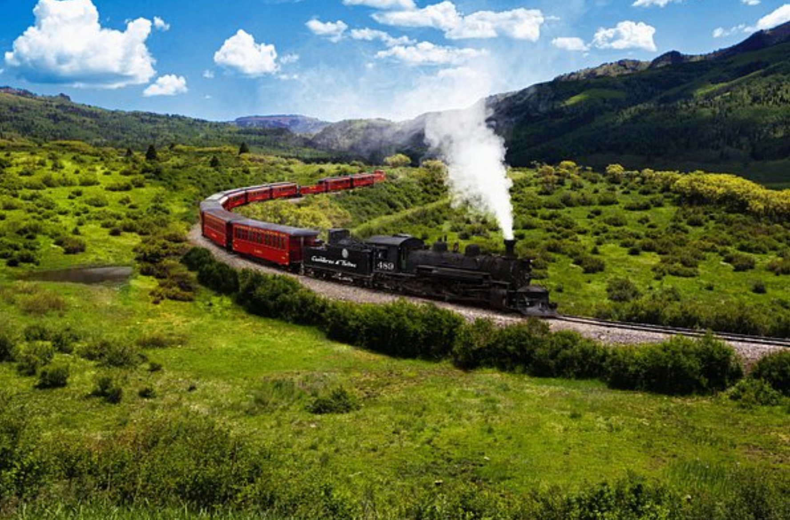

Sourdough Bread
Slow-fermented loaves with a crisp crust, soft center, and the flavor of our century-old starter.
Northern New Mexico • Made from scratch
Slow-fermented sourdough, cinnamon rolls, brownies, and coffee made with a starter whose story reaches back about a century to Chama, New Mexico.
A century in every loaf
The heart of North Star Bakery is a sourdough starter passed down by family friends from Chama, New Mexico. It has been kept alive for about 100 years, and we use that tradition as the starting point for bread that is simple, handmade, and meant to be shared.
Read the Story
Fresh from our kitchen
Everything we serve is made from scratch with a soft spot for old-school baking, warm coffee, and the flavors that make a kitchen feel like home.
The North Star favorites
Slow-fermented loaves with a crisp crust, soft center, and the flavor of our century-old starter.

Soft, swirled, buttery rolls made from scratch and finished with a sweet glaze.
Rich, fudgy, scratch-made brownies for when bread is not quite enough.

A warm cup to go with a fresh loaf, cinnamon roll, or brownie.
Our North Star
We wanted North Star Bakery to feel like the place you stop when you want something warm, familiar, and made with care. No shortcuts. Just flour, time, tradition, and a kitchen that smells good.